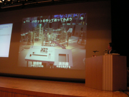
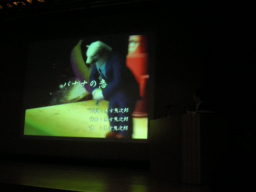
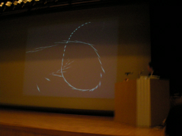
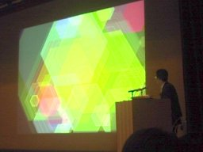

私はいかにRubyでメディア・アート作品をつくり、しかも一円も損をしなかったか （えと こういちろう）
- スピーカー
- えと こういちろう - 独立行政法人産業技術総合研究所／東京大学大学院情報理工学系研究科
- プロフィール
- Rubyist，メディア・アーティスト，深追イスト．
- 講演時間
- 16：35〜16：50
メディアアート作品の製作にRubyを活用しました
タイトルの説明
ロジャー・コーマン「私はいかにハリウッドで100本の映画を作り、しかも10セントも損をしなかったか」から
WebHopper
インターネットの通信を可視化するソフト
背景
- サーバーPerl,クライアントJava
- WIDEプロジェクトの海外回線をtcpdumpした
- tcpdump→ip2fqdn→fqdn2zip→zip2latlong
- ドメイン名の逆引きを非同期化する必要があった
- ドメイン名から緯度経度への情報はmSQLに保管
- Perl5でDBI+DBDを利用
Perlの問題点
- サーバの処理がだんだん複雑化
- PerlはThreadがないので非同期処理が面倒
- Perlで込み入ったプログラムを書くのはもう限界
- サーバサイドjavaとしても当時はまだ未成熟
Javaの問題点
- アプレットは制約が大きく表現力不足
ごめんなさい。落としました＞＜
全体の問題点
- 2つの異なったプログラミング言語
- 2つの異なったプログラミングモデル
- どちらもバッドノウハウの塊
理想のプログラミング言語を求めて
- Scheme,JPython,Python,Ruby
- 最後まで生き残ったのはRuby
- 何が決めてだったか不明
- コミュニティが決めてだったように感じる
- 2001年Rubyを本番へ投入し始めた
インターネット物理モデル
16個の転がる玉でパケットを表現
実装に使えた時間は1週間だった
くまうた
くまに演歌をおしえるゲーム
くまが演歌を歌うムービーのデモがありました。
場内爆笑
- 歌詞に大してメロディーをつけていく自動作曲の部分を作った
- 音韻数に対して音符をあわせる
- メロディーに対して背景を動かす
- 最後におかずをつけて出来上がり
- Ruby→C++に移植（SONY社員）
SGL
- 美大生のためのプログラミング環境
- Ruby/SDL＋OpenGLラッパー
- 自分自身の作品作製の基盤として
デモ
 
- 3Dグラフィックスのデモ
- 真っ暗な背景に針のような棒がたくさん音に合わせて自在に動く
- 途中から水紋のような円形の模様
- 円から六角形に
（ロガー：よう）


Keyword(s):
References:[RubyKaigi2007速報ログ]